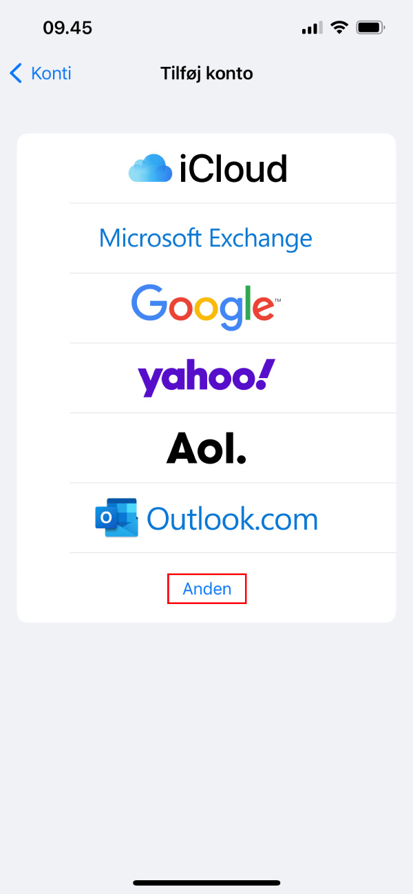
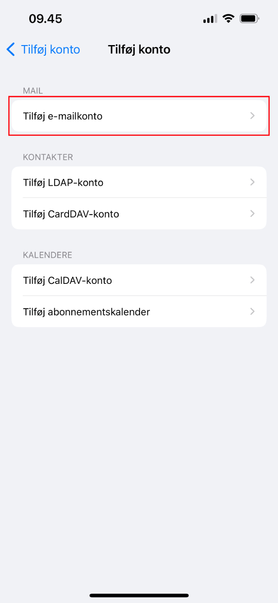
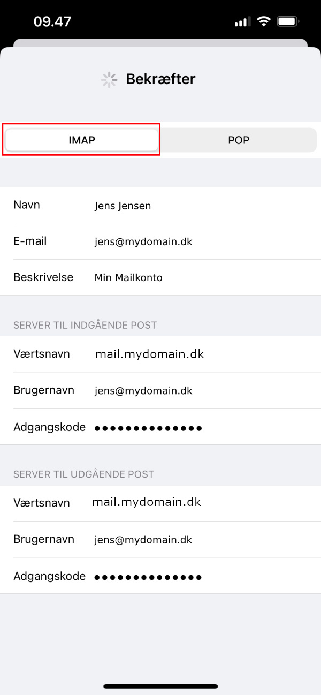
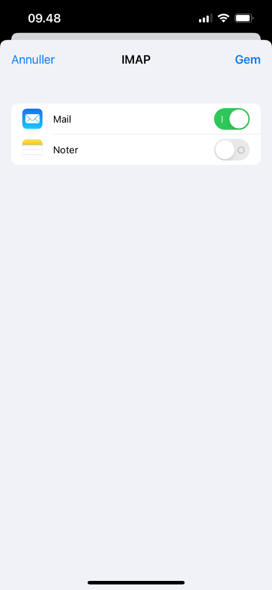

Guiden har taget udgangspunkt på, at vi skal opsætte en mailkonto, som hedder jens@mydomain.dk.
1) Åbn ”Indstillinger” på din iPhone. Du skal vælge på ”Mail” og herefter ”Konti”.
2) Du skal vælge ”Tilføj konto”. Vælg ”Anden”.

3) På den her side, skal du vælge ”Tilføj e-mailkonto”.

4) Du bliver viderestillet over til en ny side, hvor der er fire inputfelter, som skal udfyldes. Ved e-mail inputfeltet skal du skrive den e-mail, som du ønsker at opsætte, og dens kodeord. Du skal klikke på ”Næste”, når du har udfyldt inputfelterne.
5) Øverst på siden har du nu to valgmuligheder: IMAP eller POP. Vi anbefaler, at du bruger IMAP-protokollen.
Indgående Server:
Værtsnavn: Her skal du skrive ’mail.’ foran dit domæne. Fx mail.mydomain.dk
Brugernavn: Her skal du skrive din e-mail, som du ønsker at opsætte.
Kodeord: Her skal du skrive koden til din e-mail. Du kan måske opleve, at inputfeltet indeholder allerede en kodeord, i dette tilfælde skal du fjerne koden og skriv den igen.
Udgående Server:
Værtsnavn: Her skal du skrive ’mail.’ foran dit domæne. Fx mail.mydomain.dk
Brugernavn: Her skal du skrive din e-mail, som du ønsker at opsætte.
Kodeord: Her skal du skrive koden til din e-mail. Du kan måske opleve, at inputfeltet indeholder allerede en kodeord, i dette tilfælde skal du fjerne koden og skriv den igen.

Når du har udfyldt inputfelterne, skal du klikke på ”Næste”.
6) Den kan tage op til et minut med at tænke. Hvis den fejler, så skal vi tilbage til trin 4. Du skal kontrollere om, hvad du har skrevet. En god tip er, at du sletter alt af, hvad du har på inputfelterne, og starter på nyt.
Hvis den går igennem, så betyder det, at iPhone godkender dine oplysninger. Du skal tilbage på hjemmeskærmen, åbn din Mail app. Bemærk, at den kan tage et par minutter, før mails bliver synkroniseret ned fra serveren.

Der dukker ingen mails op efter 10 minutter:
Får du ingen mails efter 10 minutter, kan der være talt om dine indstillinger ved ”Indgående Server” er ukorrekte.
Jeg får mails, men jeg kan ikke sende mails:
Når du ikke kan modtage mails, kan der være en række årsager til det. Men som regel er der talt om dine indstillinger ved ”Udgående Server” er ukorrekte.